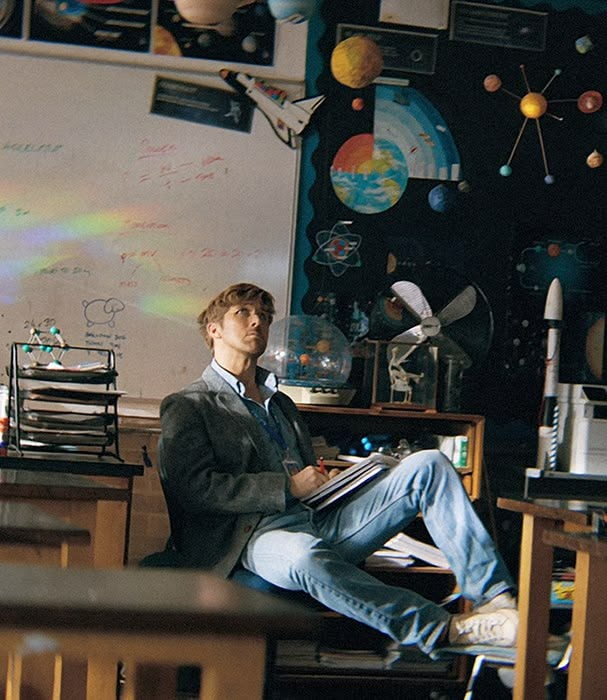
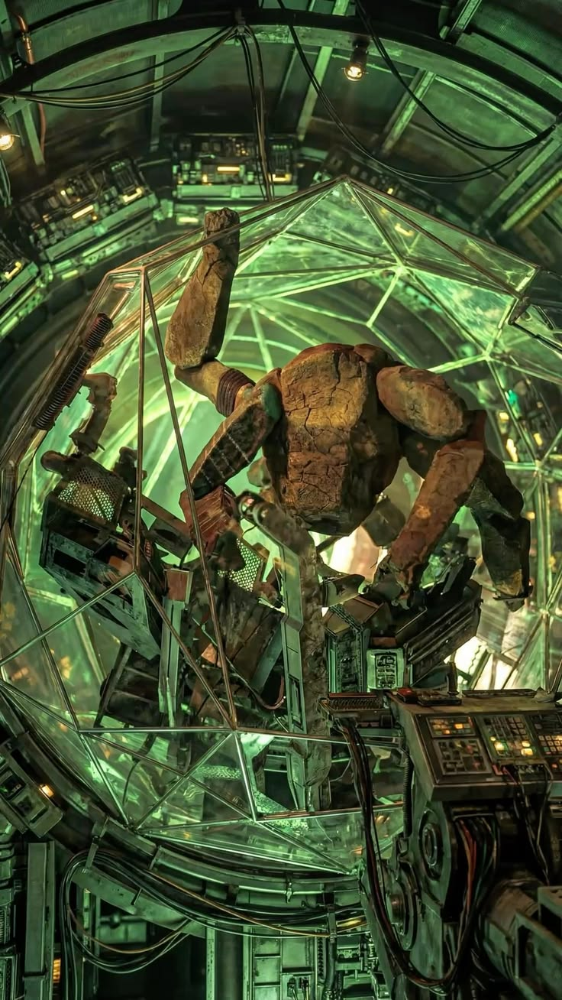

Emocionante
Equilibra tensão espacial com afeto, mantendo Grace e Rocky como o centro emocional da jornada.
Uma missão além do impossível
Uma jornada de sobrevivência, ciência e confiança no coração do desconhecido, onde a salvação da Terra depende de uma amizade improvável.
Ryland Grace
Grace começa como um homem comum cercado por ciência, medo e dúvidas. Longe de casa, ele precisa reconstruir a própria memória enquanto decifra uma ameaça capaz de apagar a luz do Sol.
Sua força não nasce da pose heroica, mas da curiosidade: testar, errar, pensar de novo e continuar quando o universo parece grande demais.

Rocky
Rocky transforma o filme em algo maior que uma missão espacial. Ele traz outra forma de perceber o mundo, com tecnologia, sensibilidade e uma lógica completamente alienígena.
A presença dele muda tudo: o medo vira comunicação, a distância vira descoberta e o impossível começa a ter método.

Grace e Rocky
O coração da história está na parceria entre eles. Sem dividir a mesma espécie, o mesmo idioma ou o mesmo planeta, Grace e Rocky encontram um jeito de confiar um no outro.
Essa amizade dá leveza à tensão e transforma a ficção científica em emoção pura: duas inteligências solitárias descobrindo que sobreviver também pode ser um ato de cuidado.
Efeitos visuais
A direção visual aposta no contraste entre o vazio cósmico, interiores técnicos e explosões de cor. Cada imagem reforça a sensação de descoberta científica diante de algo quase incompreensível.
Avaliações
Equilibra tensão espacial com afeto, mantendo Grace e Rocky como o centro emocional da jornada.
A comunicação entre espécies vira uma das partes mais criativas e memoráveis da história.
As cenas cósmicas trabalham cor, escala e mistério para vender a grandiosidade da missão.